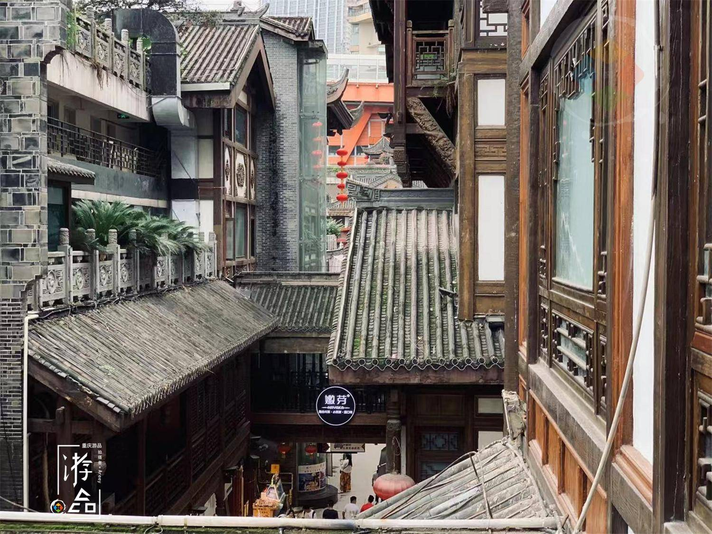

作为重庆流量最高，最有名的网红景点，洪崖洞的名号实在是太响亮了。我想，每一个到重庆旅游过的小伙伴，应该都在这里打过卡，但你们真的看清楚洪崖洞了吗？ 洪崖洞的前身，就是一个光秃秃的悬崖，经过好几年的修建，才打造出一栋具有巴渝传统建筑和民俗风貌的立体建筑——“吊脚楼群”。
洪崖洞目前一共11层楼，1楼位于嘉滨路，11楼位于沧白路，由于前来打卡的游客太多，洪崖洞将入口设置在了11楼，出口分别设置在了1楼和11楼，相当于是一条单向的游览线路
这三层楼都是巴渝风情街，延续了青砖石瓦的巴渝建筑传统。这里以各种重庆特色的工艺品店为主，展示了具有老重庆传统的生活细节。有字画、丝绸、传统乐器等等
位于4楼的美食街是最丰富，味道也是最正宗的。新鲜的糍粑、桃片、花生糖，担担面、歌乐山辣子鸡、黔江鸡杂，老重庆毛血旺等
感酒吧街其实也是一条美食街，但更偏向音乐酒吧，到了晚上，这里就会变得十分热闹，年轻人们都爱聚集在这里，享受片刻的休闲时光。 而重逢1980街区是2020年洪崖洞专门打造的区域，也是洪崖洞景区内首个付费专区，入口处超大的霓虹灯牌，写着八一路、邹容路等等重庆人都很熟悉的地标
渝十二景指的是重庆的自然景观、人文胜地、城市地标共36处值得打卡的标志性景区。自然景观中，比较有名的有武隆仙女山、云阳龙缸国家地质公园、照母山森林公园等等；人文胜地包括湖广会馆、涪陵白鹤梁水下博物馆等
这里也有一些特色的酒馆，展示了其他国家的饮食文化，重庆的外国友人喜欢在晚上来到这里，进行一些社交活动